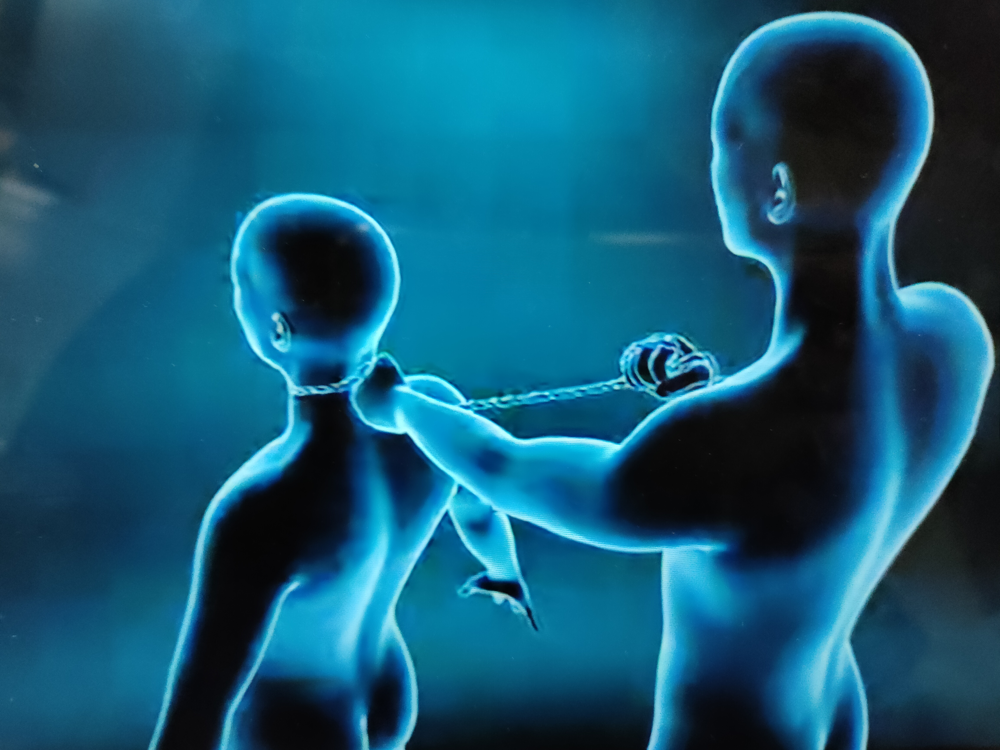
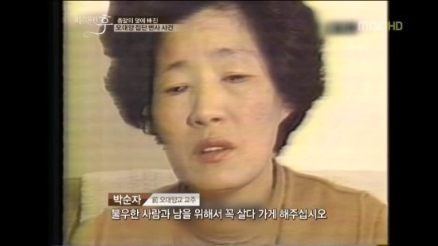
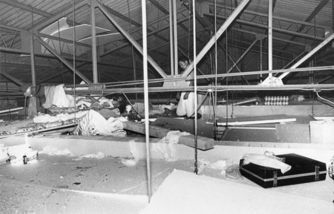

人物介紹
朴順子
「五大洋」創辦人朴順子據傳年輕時曾生了一場大病，後來莫名奇妙痊癒，她認為是自己信教後得到「救贖」，因此開始進入救援派。
1984年，「五大洋」逐漸擴展營業規模，還併吞了當地幼稚園與養老院。朴順子時常對孤兒洗腦：「你們沒有家人，只有我才是你們的母親！」
1986年，她將員工與其配偶分配在狹小的房間，命令他們禁慾，規定信徒互相監控，每天互相反省、懺悔並禁止外出。
事件發生前，朴順子命令員工借了高達170億韓元的款項。如果有債主討債，就命令員工集體毆打債主。
1987年8月29日，一名員工到龍仁的工廠巡視，發現朴順子與31名員工已經死在龍仁工廠的天花板。
r
俞炳彥
1962年與岳父權信燦一同創辦「基督教福音浸禮會」（俗稱救援派）的前身「平信徒福音傳教會」，70年代後期開始，藉口為信徒謀職位向信徒收費，實際上斂財以創立自己的事業王國。
1978年成立三友貿易、1979年成立SEMO集團。
1986年俞炳彥獲得漢江遊輪運營權，向保健食品、遊輪、造船、海運、化學等領域擴張事業。
1987年在韓國京畿道龍仁市工藝品廠發生的五大洋集體自殺事件，俞炳彥被指為幕後黑手。
1991年案件重新展開調查時，揭發他騙取信徒11億韓元，俞炳彥被判處4年有期徒刑。
2014年世越號沉沒事故發生後，所屬的清海鎮海運公司社長俞炳彥被揭發涉嫌挪用公款、轉移資金到海外及逃稅等，逃亡在外未出庭遭通緝。
2014年7月22日，全羅南道地方警察廳6月12日在全羅南道順天市發現一具遺體，死者為俞炳彥。
李基貞
首先被懷疑的是朴順子的老公李基貞，因為他也是最早發現現場的人。
李基貞聲稱自己不知道朴順子經營這樣的工廠，也不知道孩子在裡面工作？這樣聽起來不合理，而且有人指出看過李基貞去工廠裡面載貨過，不可能不知道工廠的事情以及欠債（有些債款和忠清南道道廳公務人員夫人聚會有關，所以這些錢來自於朴順子，應該李基貞會知道錢的來源和動向才對）。
事件經過
《五大洋事件》全名為《五大洋集團自殺事件》 1987年8月29日警方在京畿道龍仁市的五大洋工藝品集團的食堂頂棚發現32具屍體
包括五大洋集團的代表朴順子和她的家人及其他公司職員，而他們皆屬於韓國基督教中一支派別名為구원파（直譯：救援派或救恩派，目前仍被韓國基督教視為邪教的一支派別）。
根據警方推斷，朴順子在1984年創立五大洋企業之初便提出末日論並以教主自居
藉此向身為信徒的職員借貸170億韓寰的私債，卻因無法償還先是殺害三個前來收債的信徒後又策劃了一場集團自殺案
（補充：當時的法醫主張僅有三具屍體是自殺死亡，其他皆是因為絞殺而窒息死亡）
但這個案件卻因未能找出集體自殺的確切原因及相關證據最後成為未結案件
《五大洋事件》。
再次被提起是在2014年4月16日發生了《世越號沈船事件》後
世越號所屬公司的社長為當時五大洋集團的高層之一
在《五大洋事件》發生時這位社長也因涉嫌無償還信徒借貸而坐牢過
這兩個案件自此開始常常被韓國民眾連結在一起
時間軸
1985年："我的家人被五大洋洗腦"
1986/6月：五大洋股份公司
1987/8/16：發現遺體前，債權人遭集體施暴（朴順子在警局醫院最後身影）
1987/8/25：朴順子和信徒逃走
1987/8/26 事發前三天，消失的100億
1987/8/28：發現遺體前一天，五大洋工廠
1987/8.29：下午五點接獲報案
1988：國會第五共和貪污調查特委重啟五大洋事件調查
未解謎團
自殺還是他殺?
李敬收是現場唯一一位呈上吊姿勢死亡的人，固有推論是否為他殺其他人後自縊的討論。李敬收脖子上的勒痕，他還活著的時候血管被嚴重壓迫所導致的，簡單來說就是血痕。李敬收這血痕印卻是連脖子背後的後頸都有，照理說一個自縊的人後頸是不會有繞脖子一圈的血痕印～ 而且警方拍攝的現場照片中，李敬收的繩結沒有接觸到後頸，還是呈現半跪的姿態，所以李敬收照理來也是被『絞殺』才對，血痕印也和其他31名死者相同。
疑點反駁：
一個六十公斤的男人自縊因為前面繩子深陷脖子，所以後面才會出現空間，步驟是以打死結方式勒住自己，這樣後頸也會有血痕，隨時間流逝，繩子陷入前頸，使後頸與繩子產生空間。
紀錄片還是沒有講的很詳盡，因為李敬收為什麼會呈現半跪的狀態？一個人就算死意再怎麼堅決，如果呈現半跪的姿勢想要讓自己死掉應該很難，人的本能就是在不能呼吸的時候當然會想要掙扎，掙扎就會站起來，那以李敬收腳可以碰觸到地板的狀態來看，李敬收應該很難自己選擇自縊。 再者他的身邊也沒有什麼梯子或是高處可以爬上去套上繩子，他又是怎麼讓自己跳下來？

李敬收殺了其他31人?
專家認為李敬收要處理掉31個人需要大量時間，再加上李敬收真的有做，那李敬收的手掌一定要有皮下出血（畢竟要讓一個人真的死掉是需要很大的力氣），但李敬收手上並沒有這種把人勒死的痕跡。以李敬收自己一個人要處理掉31個人，確實存在疑點。首先，李敬收是個好幾天只吃一餐（或者甚至基本都沒有吃飯的人），他想要一一讓人死掉自己體力有辦法嗎？而且前面也有提到過，裏面其實也不只李敬收這個男生，如果李敬收也要處理掉剩下的幾個男生，那男生會反抗，李敬收的手當然更會留下痕跡才對。
因此這個他殺疑點確實是合理懷疑。 而且關於這一點檢察官的反駁其實也說不出個合理的論點，只說專家把這案件講成是他殺是讓事情變得更複雜，檢方的這樣反應反倒很可疑。

朴順子遭人打死?
以法醫的鑑定來看脖子有摩擦的痕跡，判定是被人曾後面勒住，為了抵抗並擺脫掉繩子產生大量的痕跡。不過在後續的解剖鑑定時發現朴順子的頭上有大範圍皮下血腫，也就是說在被勒死之前有被毆打過（而且還是受過大力外力才會出現這樣的狀況），照理來說她應該不太可能在自己孩子面前被人拿繩子勒住，還這麼奮力抵抗。（警方有說到朴順子的抵抗是最明顯的），專家認為或許是因為朴順子根本沒有死掉的意圖才會做出最明顯的掙扎痕跡。
以宗教團體來說，教主應該都會是看完信徒都死亡之後才最後結束自己的性命，但朴順子卻是第一個先死亡，不過朴順子是警方稱出來的教主，因為根本沒有所謂的五大洋教這個宗教流傳。 專家的疑點是，如果這是一個宗教，那朴順子應該是要透過信徒往外更加推廣信念才對。

在天花板裡自殺?
天花板是以比較不耐重的膠合版組成，基本上人在上面活動就會摔下來，因此要在上面行兇是不太可能的，就連遺體堆疊都沒有空間了，更別說要在上面坐也很困難，還要依序解決掉其他信徒？
反駁疑點：
警方說到在上面活動是可能的，因為上面有食物和排泄桶的存在，還有尿漬，因此在上面都可以生活了，行兇也會很輕鬆，反倒不認同外面行兇在搬運屍體到天花板。因為要把遺體搬運上去是很難的一件事，衣服都會被扯破等等。
再加上警方在現場發現紙碎片，拼湊起來是『絕對要閉上嘴，已經沒有意識了，從四個小時前開始，已經有五個人走了，你要閉緊嘴巴，我們一開始就計畫好了，在聖靈的引導下，你要撐下去，今天所有人應該都會走』 。
關於這一點應該就會牽涉到動機或是集體願意自刎的原因：確實在極度惡劣的環境下生存是會讓人感到越來越沒有生存意志甚至絕望的，不曉得提出集體自刎的人是不是朴順子，但以前面所提及朴順子本身有強烈的反抗像是沒有死亡意圖的反抗行為來看，那提出要集體自刎的人說不定也不是朴順子，很可能是其他信徒，朴順子或許沒有提出這項要求。那表示很可能真的是外界所為的他殺。

錢去哪裡?
朴順子上頭是不是還有人操控？照理來說五大洋擁有的錢是110億元，他們也不是住豪宅或是開好車，因此這110億再怎麼說基本上應該也不會花完。但問題是這項大筆的鉅額去了哪裡？ 可以理解專家為什麼會覺得是他殺，因為命案的發生通常是『仇殺、情殺、財殺』。因此如果這些人被殺掉是因為財殺，那就可能成立。
首先被懷疑的是朴順子的老公李基貞，因為他也是最早發現現場的人。
李基貞聲稱自己不知道朴順子經營這樣的工廠，也不知道孩子在裡面工作？這樣聽起來不合理，而且有人指出看過李基貞去工廠裡面載貨過，不可能不知道工廠的事情以及欠債（有些債款和忠清南道道廳公務人員夫人聚會有關，所以這些錢來自於朴順子，應該李基貞會知道錢的來源和動向才對）。
另一個可疑人物盧純豪是借錢、收錢、還錢並做成帳簿的人，卻沒想到盧純豪也被殺害。1991/7/11，殺害盧純豪的兇手投案，突然有六個人來自首說殺害三個人，在被殺害之前就遭職員與某教派信徒毆打致死並埋在荒野，動機就在於覺得想要脫離五大洋的盧純豪可能會洩漏秘密。
只是自首的時機點是在案發後的一年，為什麼等到一年才要自首？這個疑點被認為是有受過自首訓練，被要求說是受到五大洋的朴順子指使，警方強調這六個人是五大洋教派的前信徒，所以以前殺掉五大洋的人，現在成為基督教救援派出來自首，不過這樣的自首方式就像是被推出來背黑鍋的。
三友貿易，現場有找到『三友現在也很痛苦』這張紙條，這個三友貿易公司是『俞炳彥』所創立的公司，他實際上是基督教救援派的教主，大部分信徒會稱它為人間耶穌、彌賽亞、人間聖靈。
朴順子被認為俞炳彥是它其中的一個工具人，這講白一點就是朴順子的行為是幫俞炳彥做的。因此朴順子以宗教作為掩蓋，實際上是一間拉攏私人借貸的公司， 五大洋也只是俞炳彥的其中一個公司棋子罷了。
當中宋在華（俞炳彥的財務秘書）是連結五大洋和三有貿易的樞紐。
當中宋在華說到『如果我們透過個人所學所知 了解到理事長及其所為，明確認知到社長 是一位智者，便不會有人反對社長的作為，便會盲目地產生無論他做什麼事都會追隨他的想法』。
這一點就如同前面討論到的，人都會選擇相信眼前所看到的的東西，但不會去深究背後的真相，社會大眾會有種想法，當一個人外表光鮮亮麗時，你根本不會覺得他是壞人，就因為這種形象的蒙蔽，才會讓信徒或是手下覺得應該要追隨他，並且聽從他的指示。因此這就可以解釋朴順子騙到的錢會不見，因為都往俞炳彥那裡去了（被當成是『開發費』）。不過五大洋事件最後被判定與俞炳彥沒有直接關係。